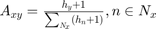
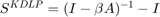
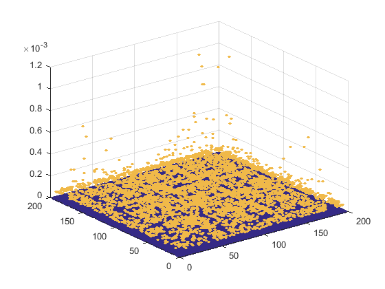
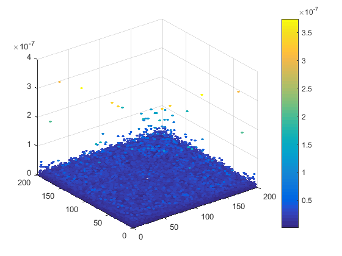

Contents
使用KDLP算法对Jazz网络进行预测，使用H-index作为衡量节点的重要性方法
clear;
读入连边列表linklist，构建网络邻接矩阵net，无向网络
dataname = 'Jazz'; datapath = 'D:\'; %数据集所在的路径 thisdatapath = strcat(datapath,dataname,'.txt');% 第ith个数据的路径 linklist = load(thisdatapath); % 导入数据（边的list） %---- 如果节点编号从0开始，将所有节点编号加1（matlab的下标从1开始） if ~all(all(linklist(:,1:2))) linklist(:,1:2) = linklist(:,1:2)+1; end %----对无向图，将第三列元素置为1 linklist(:,3) = 1; net = spconvert(linklist); nodenum = length(net); net(nodenum,nodenum) = 0; % 此处删除自环，对角元为0以保证为方阵 net = net-diag(diag(net)); net = spones(net + net'); % 确保邻接矩阵为对称矩阵，即对应于无向网络 clear linklist;
计算每个节点的H-index
通用于有向网络，x->y表示x关注或引用y，说明y传播了知识给x
[m,n]=size(net);%矩阵大小 % 计算H-index drepmat = repmat(sum(net,1)',1,n).*net; % sum(net,1)每列元素相加得到行向量，行向量每个元素表示列标节点的入度 % .*net获得每条有向边箭尾节点的入度 Heach = zeros(1,m);%存放每个节点的H-index的行向量 for i = 1:m f = 1; H = 0; while f ~= 0 if sum(drepmat(:,i)>=f) >= f;%获取第i列即指向i节点的节点集的h指数 H=f; f=f+1; else f=0; end end Heach(i) = H; end Heach = Heach+1;
为网络上的边加权
加权公式: 
clear drepmat; Hrepmat = repmat(Heach,m,1).*net;%.*net获得每条有向边箭头节点的H-index clear Heach; sim = Hrepmat./repmat(sum(Hrepmat,2),1,n); % 分母是算出节点的指向的所有节点的H-index之和，表示节点接收的知识总量 % 分子除以分母说明节点的邻居占节点接收的知识量的比例 clear Hrepmat; sim(isnan(sim))=0;sim(isinf(sim)) = 0;%分母有可能是0，即不指向任何节点的节点
将KDLP算法应用在加权后的网络上，生成相似性矩阵
计算每对节点的相似性，应用公式: 
sim = inv( sparse(eye(m)) - 0.001*sim); sim = sim - sparse(eye(m)); sim = sim+sim';%无向图需要对称处理 sim = full(sim); % 此处删除自环，对角元为0以保证为方阵 sim = sim-diag(diag(sim));
根据计算的相似性矩阵画散点图，存在的边和不存在的边颜色不同
[row, col] = find( sim ~= 0 ); num = size(row, 1); s = zeros(num,1); for i = 1:num s(i)=sim(row(i), col(i));% 每个非零的相似性值 end c = ones(num,1); for i = 1:num% 区分已存在不存在的边 if net(row(i), col(i)) ~= 0 c(i)=4.2; end end figure(1),scatter3(row,col,s,10,c,'filled'); caxis([1,5]);
只显示不存在的边的相似性，并以颜色区分相似性大小
sim2=sim; for i = 1:num %去掉已存在的边 if net(row(i), col(i)) ~= 0 sim2(row(i), col(i))=0; end end [row2, col2] = find( sim2 ~= 0 ); num2 = size(row2, 1); s2 = zeros(num2,1); for i = 1:num2 s2(i)=sim(row2(i), col2(i));% 每个非零的相似性值 end c2 = s2; figure(2),scatter3(row2,col2,s2,10,c2,'filled'); colorbar;